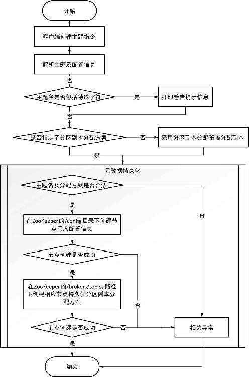
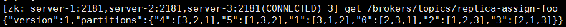

创建主题的流程包括两个阶段，第一阶段是客户端将主题元数据写入ZooKeeper，我们称其为客户端创建主题，第二阶段是控制器负责管理主题的创建，我们称其为服务端创建主题。服务端创建主题的相关流程在介绍控制器时已进行了详细介绍，本节关注的是客户端创建主题的流程。
在客户端我们可以通过调用相应API或者通过kafka-topics.sh脚本来创建一个主题，kafka-topics.sh脚本只有一行代码：
exec $(dirname $0)/kafka-run-class.sh kafka.admin.TopicCommand $@无论是调用API还是通过命令行来创建主题，底层都是客户端通过调用TopicCommand.create Topic(zkUtils: ZkUtils, opts: TopicCommandOptions)方法创建主题。该方法逻辑较简单，首先是对主题及相关的配置信息进行相应的校验，然后执行分区副本分配，当然客户端可以直接指定副本分配方案，若客户端没有指定分区副本分配方案，Kafka会根据分区副本分配策略自动进行分配，最后是在ZooKeeper的/brokers/topics/路径下创建节点，将分区副本分配方案写入每个分区节点之中。例如，我们创建一个名为“kafka-action”的主题，假设该主题有一个分区，每个分区有一个副本，则客户端创建该主题时会将分区副本分配方案写入ZooKeeper的/brokers/topics/kafka-action/ partitions/0/state节点中，其中0表示是分区编号。客户端创建主题的基本流程如图4-5所示。

图4-5 客户端创建主题基本流程图
关于主题名相关的较验，这里简要阐述Kafka主题命名规则。Kafka规定主题的命名规则为：主题名字由长度不超过249个字母、数字、着重号（. ）、下划线（）、连接号（）的字符组成，正则表达式为：“[a-zA-Z0-9\._\-]+”，但不允许主题名字只有着重号（．）组成。同时鉴于一些度量指标名称会用到着重号或下划线，如Kafka内部监控指标、有些配置项字段名通常是以着重号或下划线构成，Kafka建议为了避免主题名字与这些指标字段名称冲突，主题最好不要包括着重号及下划线字符，如果主题的名字包括这些字符，在创建主题时会看到有如下警告日志信息：
WARNING: Due to limitations in metric names, topics with a period ('.') or underscore
('_') could collide. To avoid issues it is best to use either, but not both。在创建主题时可以指定分区副本分配方案，也可以采用Kafka默认的分区副本分配策略创建副本分配方案。在0.10版本之后，Kafka支持指定代理机架信息，如果指定了机架信息在副本分配时会尽可能地让分区的副本分布到不同的机架上。本小节介绍副本分配策略时我们不考虑设置机架信息。
无机架信息的副本分配的入口函数如代码清单4-1所示。
代码清单4-1 不指定机架（RackUnaware）信息时副本分配的实现逻辑
private def assignReplicasToBrokersRackUnaware(
nPartitions: Int, // 分区数
replicationFactor: Int, // 副本数
brokerList: Seq[Int], // 当前存活的Broker列表
fixedStartIndex: Int, // 第一个副本分配的位置
startPartitionId: Int // 起始分区编号
): Map[Int, Seq[Int]] = {
val ret = mutable.Map[Int, Seq[Int]]() // 保存分配结果的集合
val brokerArray = brokerList.toArray // brokerId对应的列表
val startIndex = if (fixedStartIndex >= 0) fixedStartIndex else
rand.nextInt (brokerArray.length) // 若起始索引小于0，则根据代理列表长度随机生成
// 起始索引，以保证是一个有效的brokerId
var currentPartitionId = math.max(0, startPartitionId)
// 分区编号值为0，为了保证传入的起始分区编号有效
var nextReplicaShift = if (fixedStartIndex >= 0) fixedStartIndex else
rand.nextInt (brokerArray.length) // 位置移动增加的步长，即与该分区第一个副本位置的间隔长度
// 轮询所有分区，将每个分区的副本分配到不同的代理上
for (_ <- 0 until nPartitions) {
if (currentPartitionId > 0 && (currentPartitionId % brokerArray.length == 0))
nextReplicaShift += 1 // 一遍轮询后位置增量加1，
// 为了将副本尽可能地分布在不同的代理上
val firstReplicaIndex = (currentPartitionId + startIndex) % brokerArray.length
// 计算该分区第一个副本位置
val replicaBuffer = mutable.ArrayBuffer(brokerArray(firstReplicaIndex))
// 保存该分区所有副本分配的Broker位置集合
for (j <- 0 until replicationFactor - 1)
replicaBuffer += brokerArray(replicaIndex(firstReplicaIndex, nextReplicaShift,
j, brokerArray.length)) // 为余下的副本分配代理
ret.put(currentPartitionId, replicaBuffer)
// 保存该分区所有副本所分配的Broker位置信息
currentPartitionId += 1 // 继续为下一个分区分配副本
}
ret
}代码清单4-1所示分配算法的核心思想是先将分区和代理按编号进行排序，然后从分区编号为0的分区开始，依次轮询为每个分区副本分配代理。为每个分区副本分配代理时，首先确定分区的第一个副本的位置，然后通过replicaIndex(firstReplicaIndex, nextReplicaShift, j, brokerArray.length)为余下的副本分配代理。replicalIndex()方法具体实现如代码清单4-2所示。
代码清单4-2 计算副本所在代理的算法实现
private def replicaIndex(firstReplicaIndex: Int, secondReplicaShift: Int, replicaIndex:
Int, nBrokers: Int): Int = {
val shift = 1 + (secondReplicaShift + replicaIndex) % (nBrokers - 1)
// 以保证与第一个副本的间隔长度为1到n,其中n表示代理列表的长度
(firstReplicaIndex + shift) % nBrokers
// 与第一个副本的间隔长度为shift
}当在创建主题没有指定分区副本分配方案时，Kafka通过代码清单4-1所示算法来为分区副本分配代理。Kafka调用该算法为副本分配代理时，入参fixedStartIndex和startPartitionId使用默认值−1，因此每次创建一个新主题时startIndex的值都是一个随机数。同时入参startPartitionId的也使用默认值−1，因此currentPartitionId的值为0。可见，默认创建主题时总是从编号为0的分区依次轮询。这样我们可以通过登录ZooKeeper客户端查看副本分配信息，根据编号为0的分区的AR反推出startIndex的值和nextReplicaShift的值。
分配策略之所以通过随机数来确定第一个副本位置，以及第二次轮询相对前一次分配的移位量（nextReplicaShift）是为了尽可能地把分区副本均匀分布。如果这里固定为某个值，那么就会导致某个代理分配的副本过多，从而导致各代理负载不均衡。另外，在分配时通过移位操作，也可保证同一个分区的多个副本分布在不同的代理上。
下面通过一个实例来验证分区副本分配算法的逻辑，假设有3个代理，依次记为B1、B2和B3（由于是从1开始编号，因此数组下标0对应是B1，数组下标1对应是B2，依次类推），创建一个名字为“replica-assign-foo”的主题，该题有6个分区，依次记为P0、P1、P2、P3、P4、P5和P6，每个分区有3个副本（副本数不能超过代理实例节点数），客户端创建命令如下：
./kafka-topics.sh --create --zookeeper server-1:2181,server-2:2181,server-3:2181
--replication-factor 3 --partitions 6 --topic replica-assign-foo主题创建成功后，登录ZooKeeper客户端通过执行以下命令查看该主题的分区副本分配方案：
get /brokers/topics/replica-assign-foo主题“replica-assign-foo”分区副本分配方案如图4-6所示。

图4-6 主题“replica-assign-foo”分区副本分配方案
由图4-6可知，分区P0的第一个副本分配在B2节点上，即在由代理列表构成的数组中的第二个节点上，因此firstReplicaIndex为1，有公式：
firstReplicaIndex = (currentPartitionId + startIndex) % brokerArray.length //公式1将相应数据代入公式1，即1=(0+startIndex)%3，很容易推出本例创建主题随机生成的startIndex为1。由分区P0的第二个副本分配在B3，再由以下公式计算后最终返回的值为2：
val shift = 1 + (secondReplicaShift + replicaIndex) % (nBrokers - 1) //公式2
(firstReplicaIndex + shift) % nBrokers //公式3先由公式3可求得shift，代入相应值，即(1+shift)%3=2，可得shift为1。然后代入公式2，即1=1+(secondReplicaShift+0)%(3-1)，可求得secondReplicaShfit为2，即对应算法起始随机为nextReplicaShift生成的值为2。在运算时，replicaIndex取值为0是由于Kafka在为第一个副本分配代理之后，迭代为余下副本分配代理时，从下标0开始。
通过以上运算后，分区副本分配算法的初始数据如表4-3所示。
表4-3 副本分配策略初始数据
|
startIndex |
currentPartitionId |
nextReplicaShit |
brokerArray.length |
|---|---|---|---|
|
1 |
0 |
2 |
3 |
由公式2和公式3可求得P0的第三个副本分配的代理。第三个代理对应的replicaIndex为1，代入公式2和公式3，最终运算结果为0，即P0的第三个副本分配在B1上，这与图4-6展示的分配结果一致。然后根据副本分配算法依次为余下的分区副本分配代理，最终分配结果如表4-4所示。
表4-4 主题“replica-assign-foo”分区副本分配结果
|
P0 |
P1 |
P2 |
P3 |
P4 |
P5 |
|---|---|---|---|---|---|
|
B2 |
B3 |
B1 |
B2 |
B3 |
B1 |
|
B3 |
B1 |
B2 |
B1 |
B2 |
B3 |
|
B1 |
B2 |
B3 |
B3 |
B1 |
B2 |
表4-4分配结果是通过算法逻辑递推得到的，是从分区的维度进行切分。从表4-4所示的结果我们很难找出规律，现在根据算法的思想，我们从代理的角度进行考虑。
首先将代理按brokerId排序，给P0的第一个副本分配代理，然后递增依次为其他分区的第一个副本分配代理，这里称之为一轮。同时将每一轮根据代理总数m和分区总数n将每一轮分成n/m步。根据每个分区的副本数r，我们将整个副本分配过程分为r轮。从第二轮开始，每个副本相对第一轮副本的位置向右平移shift个位置，但若partitionId%m=0时将shift加1，shift起始值为0。由于将每一轮进行了分步，因此从第二轮开始，每一轮在第二步操作开始前shift值要增加1，若(partitionId+ shift)%m=0时，则将该偏移量再增1。根据这种分配思想，我们得到如表4-5所示的分配结果。
表4-5 副本分配结果
| 轮次 | B1 | B2 | B3 | shift | |
| 第一轮 | P0 | P1 | 0 | ||
| P2 | |||||
| P3 | P4 | 1 | |||
| P5 | |||||
| 说明：P0～P2为第一步记为S11，P3～P5为第二步记为S12，第一轮确定P0的位置（B2）后依次分配不进行右移操作。为了便于区分，这里将第一步和第二步进行了换行，虽然P0～P1与P2换行了但仍属于一步之内，这里的换行只根据顺序进行排列，在第二步操作虽然没有右移但由于P3%3=0，则shift要加1操作，下同 | |||||
| 第二轮 | P0 | 1 | |||
| P1 | P2 | ||||
| P3 | P4 | P5 | 2 | ||
| 说明：第二轮第一步记为S21，第二步记为S22，S21只需将S11右移1位，S22操作前将shift加1，此时shift为2，因此S22即将S12右移2位 | |||||
| 第三轮 | P0 | P1 | P2 | 2 | |
| P3 | 4 | ||||
| P4 | P5 | ||||
| 说明：第三轮第一步记为S31，第二步记为S32，S31操作只需将S11右移2位，S32操作时即为P3分配代理时shift加1，即shift值变为3，但此时(partitionId+shift)%3==0，因此shift要再加1，此时shift变为4，因些S32操作是将S12右移4位 | |||||
通过表4-5很容易得到本例副本分配结果如下：
{"version":1,"partitions":{"0":[2,3,1],"1":[3,1,2],"2":[1,2,3],"3":[2,1,3],"4":
[3,2,1],"5":[1,3,2] }}这与图4-5所示的分配结果一致。副本分配结果列表给出了该主题拥有的分区以及各分区的副本列表AR，AR中的第一个副本称为优先副本。Kafka保证优先副本会被均匀分布到集群所有的代理节点上，刚创建的主题一般会选择优先副本作为分区的Leader，这样一个主题的所有分区的Leader被均匀分布到集群当中，而Leader负责所有的读写操作，这样就保证不会由于Leader分布过于集中而导致集群负载不均衡的问题。